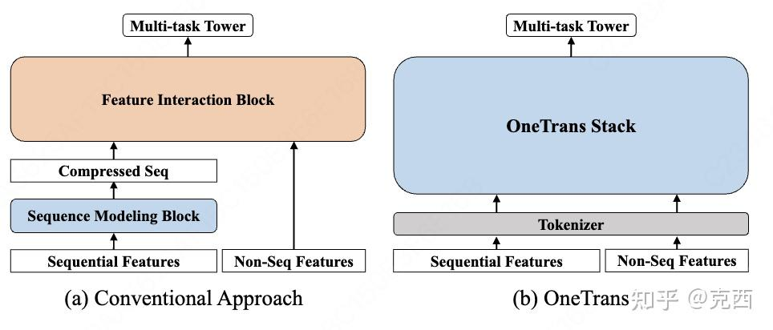
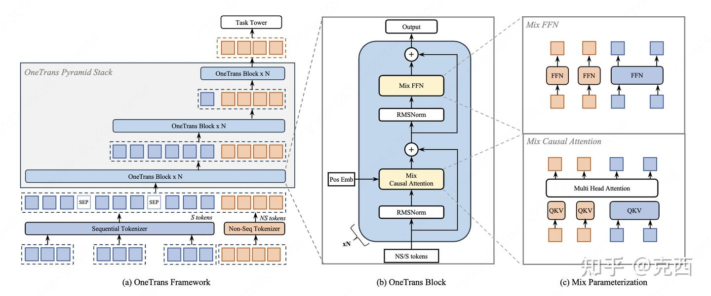
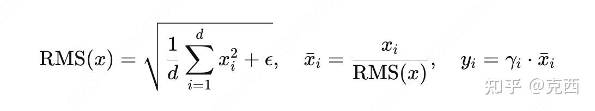
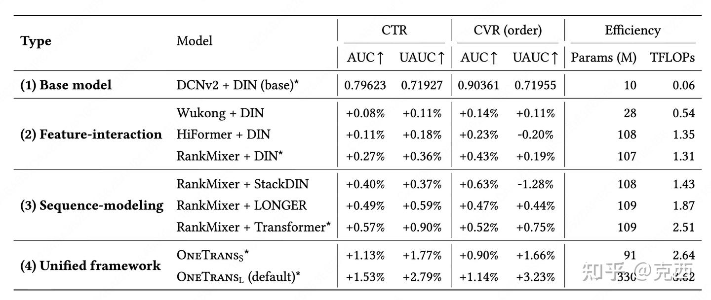
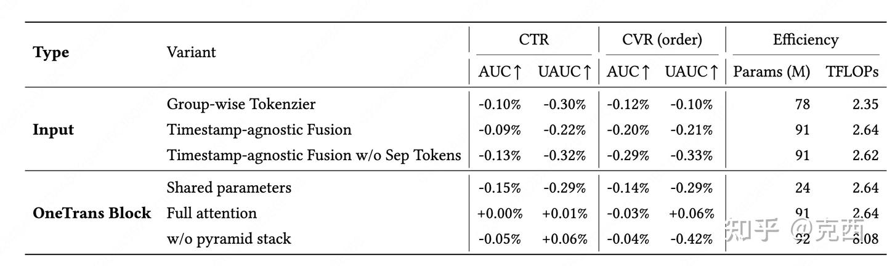
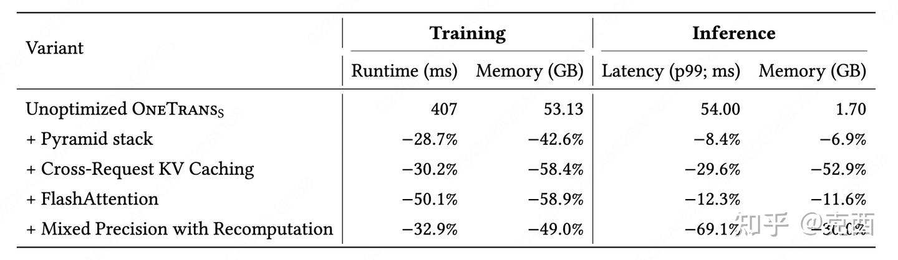

背景
关于推荐系统精排：
在工业级推荐系统中，排序模型承担着从数百个候选物品中选出用户最可能点击或购买的那一个的重任。近年来，深度学习推荐模型的演进主要沿着两条独立的轨道进行。
- 排序模型通常分为两个独立模块：
- 序列建模模块：建模用户的历史行为序列（如点击、购买）。
- 特征交互模块：建模非序列特征（如用户画像、物品属性、上下文）之间的高阶交互。
传统做法是先用一个序列模型（如DIN、Transformer）将用户行为序列压缩成一个固定长度的向量，然后与其它非序列特征拼接，再送入特征交互模块（如DeepFM、DCN）进行最终预测。
传统方法局限：
- 信息流受限：序列特征和非序列特征之间的交互被延迟到后期，无法实现双向信息融合。
- 系统优化困难：两个模块独立训练和推理，无法统一优化和扩展，难以复用大模型的高效优化技术
序列建模
用户的行为序列（如最近点击的100个商品）包含了丰富的兴趣信号。早期的模型如DIN（Deep Interest Network）通过目标注意力机制，让候选物品主动去“关注”历史行为中与之相关的部分，生成一个与候选相关的兴趣向量。后来的Transformer-based方法（如BST、SASRec）则让序列内部所有位置互相交互，捕捉长距离依赖。
特征交互
除了行为序列，排序模型还需要处理大量非序列特征：用户ID、物品ID、类别、价格、时间等。这些特征之间的高阶组合（如“女性用户+美妆类物品+周末”）往往对预测至关重要。经典方法包括FM（因子分解机）、DeepFM、DCN（Deep & Cross Network）等，它们通过显式或隐式的方式学习特征交叉。
OneTrans的核心是：把序列建模和特征交互放在一个 Transformer 里一起做

OneTrans核心设计

统一分词器 ：将序列特征和非序列特征统一转化为Token序列。
非序列特征：
- 分组式（Group-wise）：人工将特征划分为若干语义组（如用户基础信息组、物品价格组），每组内特征拼接后经过一个专用的MLP，输出一个Token。每个组对应一个Token，组间参数独立。
- 自动切分（Auto-Split）：将所有特征拼接后通过一个共享MLP，然后将输出的向量切分成 LNSLNS 段，每段作为一个Token。这种方式减少了核函数启动开销，实验证明效果更好。
序列特征：
每条序列由一系列事件（item ID + 信息）组成。首先，每个事件通过一个序列专用的MLP投影到维度 d，得到对齐的向量。然后，将这些序列合并成一个长序列。
- 时间戳感知：按事件发生的真实时间戳全局排序，用可学习的类型嵌入区分不同序列。
- 时间戳无关（按意图强度）：将购买行为放在最前面，然后是加购，最后是点击，中间插入[SEP] Token分隔。
最终，将S-tokens和NS-tokens拼接，得到长度为 LS+LNS 的统一序列，作为OneTrans的输入。
OneTrans Block堆叠：用混合参数化的Transformer Block，同时进行序列内部交互和跨特征交互。
因果掩码：每个Token只能看到它前面的Token。
- 对于序列部分：保证行为的时间顺序正确，后面的行为可以依赖前面的历史。
- 对于非序列部分：每个NS-token可以看到所有S-tokens（因为NS-token放在S-tokens序列之后），从而实现目标注意力式的序列聚合；同时也能看到前面的NS-tokens，促进特征间的交互。
RMSNorm：训练更稳定
RMSNorm是LayerNorm的简化版，只对输入做基于均方根的缩放，不做均值中心化：

相比LayerNorm，RMSNorm计算更轻量。
实验团队发现均值中心化对Transformer性能贡献不大。在OneTrans中，由于S-tokens和NS-tokens的统计分布差异很大，Post-Norm容易导致训练不稳定，而Pre-Norm + RMSNorm能有效对齐各Token的尺度，提升稳定性。
金字塔剪枝
随着层数加深（深度比宽度更有效果），逐步减少序列Token的数量，将信息压缩到少量Token中。
- 在每一层，只对最后 L′ 个Token计算Query，而Key和Value仍然基于全部Token计算。
- 这样，序列长度逐层缩减（例如从1200 → 600 → 300 → ... → 12），最终只剩下少数Token（通常是NS-tokens加上少量S-tokens）参与后续交互。
优势：
- 信息蒸馏：早期的行为信息通过层层传递，逐步浓缩到尾部Token中，相当于模型自动完成了“重要行为筛选”。
- 计算效率：Query数量减少，注意力复杂度从 O(L^2) 降到 O(L⋅L′)，FFN也只需处理缩减后的Token，大幅降低FLOPs。
系统优化
KV缓存：在自回归生成中，每次生成一个新Token，都需要计算它与之前所有Token的注意力。如果不做缓存，每步都要重新计算之前所有Token的Key和Value，复杂度为 O(n^2)。KV缓存的做法是：将之前每一步的Key和Value保存在内存中，新Token只需计算自己的K/V，然后与缓存的K/V做注意力，复杂度降为 O(n)。
在推荐排序中，一次用户请求通常包含上百个候选物品，所有候选共享相同的用户行为序列（S-tokens），但每个候选有自己的非序列特征（NS-tokens）。OneTrans利用这一特点设计了两阶段推理：
- 阶段一：计算所有S-tokens的Key和Value，并缓存起来。
- 阶段二：对于每个候选，计算其NS-tokens的Query，然后利用缓存的S-tokens K/V进行注意力计算，最后经过各自的FFN。
这样一来，原本需要对每个候选重复计算的序列部分被完全复用，候选数越多，节省的计算量越可观。
并且由于用户行为是“只增不改”的，OneTrans支持跨请求增量缓存：新的请求只需计算新增行为的K/V，追加到缓存中，从而将每次请求的序列计算量从 O(L)降到 O(ΔL)。
FlashAttention-2：通过tiling和kernel fusion减少注意力计算的显存读写，提升训练速度。
实验效果
离线实验
论文在ByteDance的工业级数据集上进行了大规模离线评估，数据量29.1B样本，27.9M用户，10.2M物品。对比的基线包括：
- 传统分离架构：DCNv2+DIN → Wukong+DIN → HiFormer+DIN → RankMixer+DIN
- 增强序列建模：RankMixer+Transformer → RankMixer+LONGER
结果显示：
- OneTransS（约100M参数）在CTR AUC上比最强分离基线RankMixer+Transformer提升+1.13%，CVR UAUC提升+1.66%。
- OneTransL（330M参数）进一步提升至+1.53%（CTR AUC）和+3.23%（CVR UAUC）。

在线A/B测试
在Feed和Mall两个核心场景中，OneTransL替代原有的RankMixer+Transformer作为线上模型，取得了显著的业务提升：
| 场景 | 点击/u | 订单/u | GMV/u | p99延迟 |
| Feeds | 0.0774 | 0.0435 | 0.0568 | -3.91% |
| Mall | 0.0514 | 0.0258 | 0.0367 | -3.26% |
此外，冷启动用户订单提升13.6%，活跃天数提升0.75%。
消融实验

值得注意的是因果注意替换为全注意力（取消因果掩码，每个 Token 可以看到所有其他 Token）性能几乎无变化。
